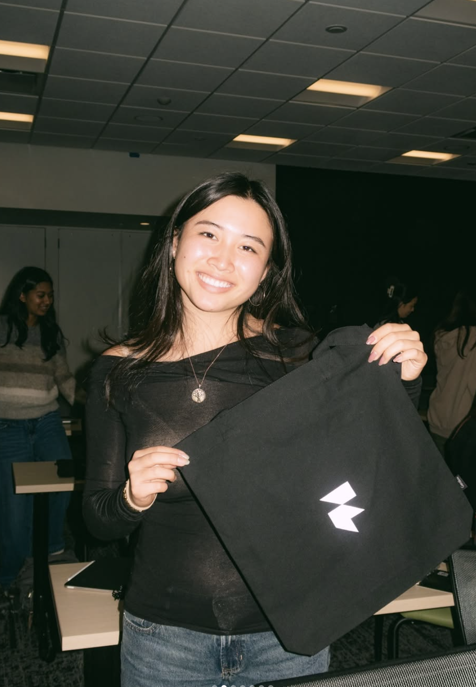
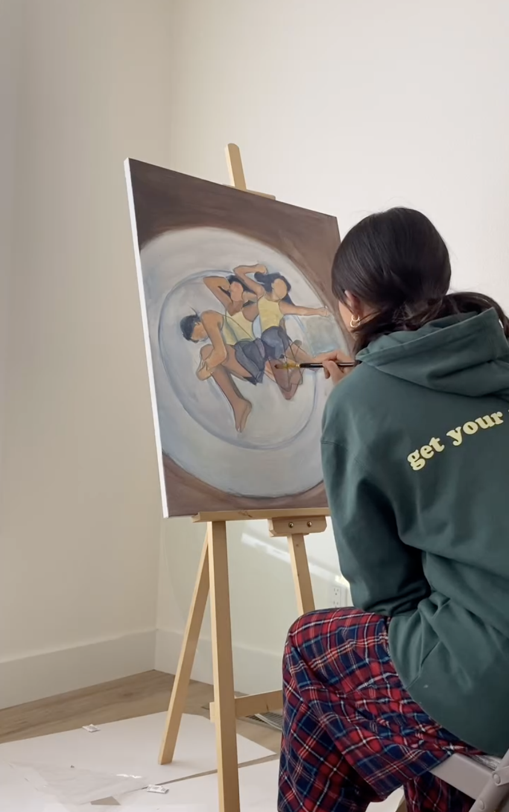

HI,
I’m Joyce! I really, really like to think about how feelings, senses, and design overlap. So, I create to shed light: on the texture of everyday interactions, and on our most overlooked margins and creases.




